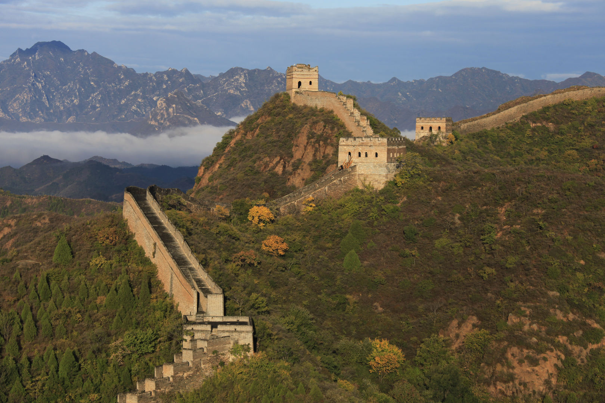
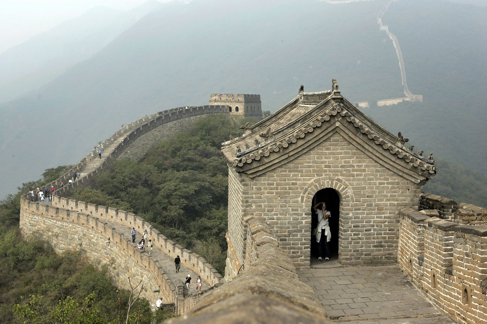
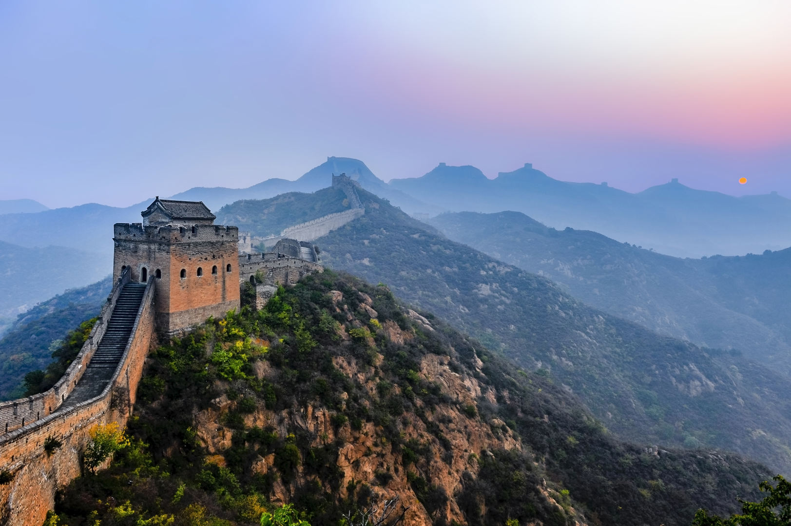

Didžioji kinų siena (kin. 長城, pinyin: Chángchéng, t. y. „Ilgoji siena“) – istoriniai gynybiniai įrenginiai palei istorines šiaurines Kinijos sienas, turėję saugoti Kinijos valstybes ir imperijas nuo klajoklių antpuolių iš Eurazijos stepės. Keletas sienų buvo pastatytos jau VII a. pr. m. e. Vėliau jos buvo apjungtos, padidintos bei sustiprintos ir dabar bendrai vadinamos Didžiąja siena. Garsiausia yra siena, kurią 220–206 m. pr. m. e. pastatė pirmasis Kinijos imperatorius Ši Huangdi. Iš šios sienos mažai kas išliko. Po to, Didžioji siena buvo vis perstatoma, plečiama ir tobulinama; didžioji dalis iki šiol išlikusių sienos fragmentų yra iš Mingų dinastijos laikų. Pagal išsamius archeologinius tyrimus naudojant modernius tyrimų metodus paskaičiuota, kad Mingų siena buvo 8850 km ilgio. Iš šio ilgio 6259 km buvo pati siena, 359 km – gynybiniai grioviai ir 2232 km gamtinės kliūtys – kalvos ir upės. Pagal kitą archeologinį tyrimą siena su visomis jos atšakomis buvo 21 196 km ilgio. Tai – ilgiausias rankų darbo statinys pasaulyje. Pagrindinė siena puikiai pritaikyta prie reljefo, vingiuoja palei upių vagas, slėnius ir kalnus. Siena buvo statoma iš akmenų, žemės ir molio, o sienos dalys rytuose buvo apmūrytos plytomis. Apačioje jos plotis 4,6–9,1 m. (vidutiniškai 6 metrai), o viršuje iki 7,6 m. Jos aukštis siekia vidutiniškai 7,6 m (neįskaitant dantytos gynybinės sienos). Maždaug kas 180 m buvo įrengti sargybos bokštai (apie 12 m aukščio). Siena tęsėsi nuo Dandongo prie dabartinės Kinijos–Korėjos sienos rytuose iki Lobnoro ežero vakaruose sudarydama lanką, kuris daugmaž atitinka dabartinę pietinę Vidinės Mongolijos sieną.
Jau prieš 2700 m. atskiros valstybėlės statė sienas, kad atsiskirtų nuo kaimynų. Pirmasis imperatoriumi pasiskelbęs valdovas Čin Ši Huangdi (Qin Shi Huangdi), siekdamas vieningos imperijos, įsakė jas nugriauti (maždaug prieš 2200 m.). Tada išliko tik sienos, esančios šiaurėje ir gynusios nuo klajoklių tautų: tokių kaip hunai ir mongolai. Valdant Ši Huangdi, buvo pradėti sistemingi sienos statybos darbai, gynybinių pylimų įrengimas (maždaug 221 m. pr. m. e.). Apie 204 m. pr. m. e. darbai buvo baigti. Spėjama, kad prie Ši Huangdi pastatyta beveik 1900 km sienos, apie anksčiau pastatytas sienos dalis vis dar negalima pasakyti, ar jos buvo pastatytos kaip viena visuma, ar visiškai nepriklausomai viena nuo kitos. Han dinastijos metu sienos dalys buvo sutvirtintos ir tarpusavyje sujungtos. Pirmoji siena vėliau nugriuvo, nes imperijos centras persikėlė tolyn į pietus, o mongolai, nuo kurių ji turėjo apginti, ją smarkiai apgadino, kai XIII a. užkariavo Kiniją. Ming dinastija (1368–1644 m.) vėl užsiėmė sienos statyba, siekdama sustabdyti klajoklių tautas. Ming dinastijos metais siena buvo patobulinta ir išplėsta, pakeičiant senus molio ir žemės pylimus mūrine siena. Šiuo laikotarpiu buvo pastatyta dabartinio ilgio ir formos siena.
Dabar restauruota tik pora kilometrų, ištisos sienos dalys pusiau griuvėsiai, o kitos visiškai sunykusios. Ilgą laiką yra paplitęs mitas, jog Kinų sieną galima pamatyti iš kosmoso plika akimi. Taip nėra, kadangi siena nėra pakankamai plati. Tai 2004 m. turėjo būti pataisyta Kinijos mokinių vadovėliuose po to, kai pirmasis Kinijos astronautas (taikonautas) Jang Livei (Yang Liwei), 2003 m. spalio mėnesį sugrįžęs iš kosmoso pasakė: „Vaizdas buvo nuostabus, bet aš negalėjau pamatyti Didžiosios sienos“. Kinų siena yra gausiai lankoma turistų. Labiausiai paplitusi vieta – Badalingas, kuris yra maždaug 70 km už Pekino. Apžvalgai puikiai tinka ir kitos vietos – Mutianju (Mutianyu), Simatai, Dzinšanlingas (Jinshanling). Nuotraukose aiškiai matosi, kad siena daugiausiai gana stati. Be to, ji tokia plati, kad ja galima naudotis kaip gatve. Daugelyje Didžiosios kinų sienos vietų yra pastatyti paminklai su populiaria Kinijoje Mao Dzedungo fraze: kin. 不到长城非好汉, pinyin: Bú dào chángchéng fēi hǎo hàn, t. y. „Tas, kuris neužkopė į Didžiąją kinų sieną, nėra tikras kinas“. 1987 m. UNESCO paskelbė Kinijos sieną pasaulio kultūros paveldo objektu.
